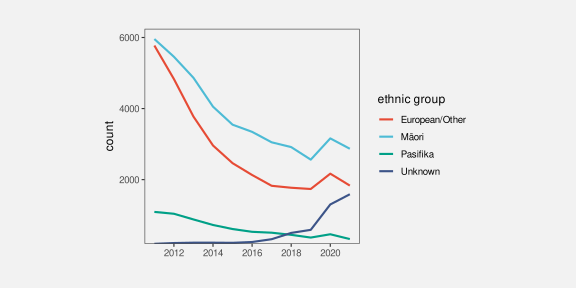
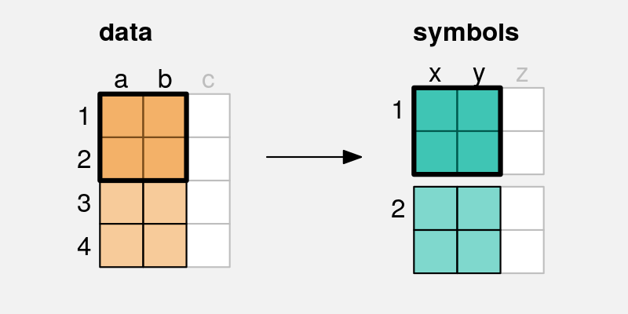
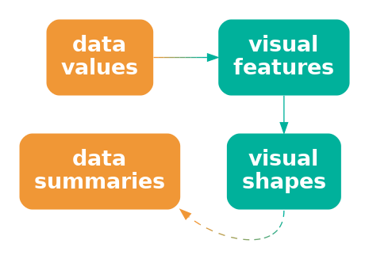
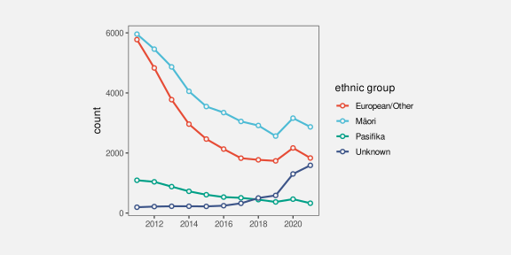
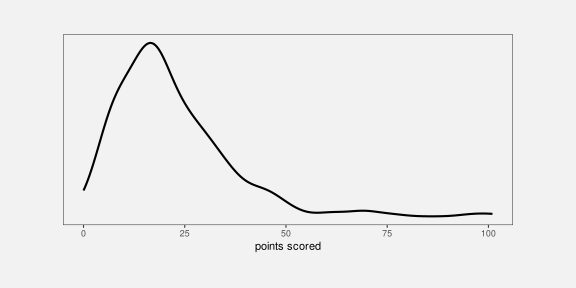
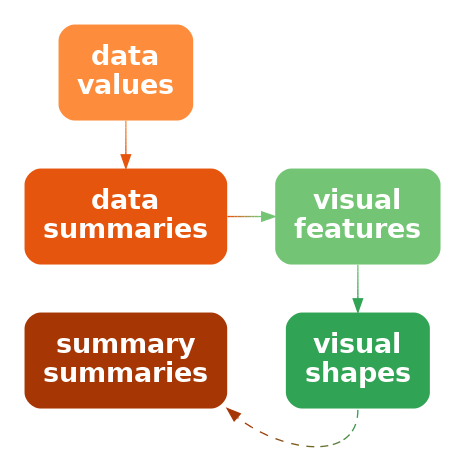
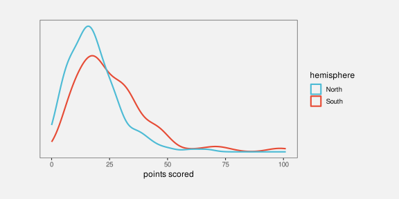
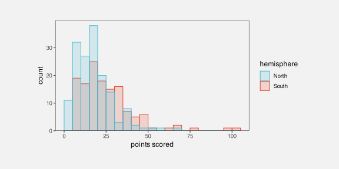
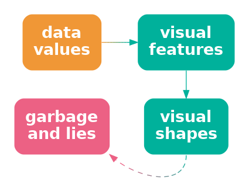
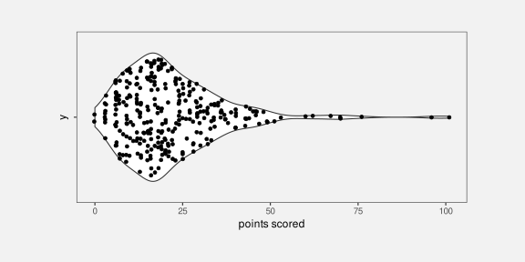

10 Visual Shapes
TODO refer back to Section 4.3 and mention that shapes are one solution, with all of the drawbacks of not being able to decode individual data values. Footnote surjective/injective?
All of the data visualisations that we have considered so far have mapped a single data value from one or more variables to a single data symbol (Figure 10.1 (a)). For example, a bar plot like Figure 3.2 maps one category and one count to one bar. A scatter plot like Figure 9.4 maps one data value from a quantitative variable and one data value from another quantitative variable to one data point.
In this chapter, we consider data visualisations that map multiple data values from one or more variables to a single data symbol (Figure 10.1 (b)). In this chapter, we begin to consider more complex data symbols.


x and y are mapped to the visual features, a and b, of a single data symbol. Multiple pairs of values produce a single data symbol.
10.1 Line plots
Figure 10.2 shows a line plot of the number of offenders per year in different ethnic groups from 2011 to 2021 (see Table 5.1). This data visualisation is very effective for perceiving changes over time in the number of offenders within each group as well as comparing the changes over time between groups.
There are some familiar mappings in this data visualisation: year is mapped to horizontal position, the number of offenders is mapped to vertical position, and the ethnic group is mapped to colour. However, the data symbols in this data visualisation, the coloured lines, are different from any previous examples that we have seen. Although there are 44 rows of data, there are only 4 data symbols. Multiple rows of data are used to create each data symbol. Each coloured line in Figure 10.2 represents 11 pairs of year and count values.
This contrasts with visualisations like bar plots that use simpler data symbols. For example, the bar plot of the same data in Figure 5.7 has 44 bars.
Figure 10.2 is effective at conveying changes over time because the coloured lines create visual shapes (Figure 10.3) and those visual shapes convey information about collections of data values. For example, we can perceive slopes and curves and peaks and valleys in each of the coloured lines.1

In terms of the simple visual processing model from Section 2.2, these more complicated shapes can convey more sophisticated information, at the expense of more cognitive effort, and with a limit on how many shapes we can process simultaneously (see Figure 2.4). In other words, the more complex data symbols allow us to decode data summaries (Figure 10.4). For example, in Figure 10.2 we are able to perceive overall trends in the number of offenders, periods of more rapid change versus periods of slower change, and local maxima and minima.2

This ability to perceive data summaries, such as peaks and slopes, when we use lines as data symbols is even more apparent if we compare Figure 10.2 with Figure 5.7. When we have bars as data symbols, these data summaries are much less apparent.
In terms of Chapter 7, the use of lines for data symbols is also congruent with trends in the data; we naturally associate slopes with increases and decreases in data values.3
One reason why line plots are effective is because they encode multiple data values into a complex data symbol that creates a visual shape, from which we are able to decode data summaries.
On the other hand, the more complex data symbols in a line plot, that contain multiple data values, are less effective at conveying the individual raw data values. The coloured lines in Figure 10.2 are not simple shapes from which it is easy to perceive basic visual features. This means that, although we may be able to decode data summaries, it is not easy to decode the raw data values (Figure 10.4). For example, compare the ease with which we can determine the number of European/Other offenders in 2013 from Figure 10.2 versus Figure 5.7.
This deficiency is significant because the main mappings in a line plot are from quantitative data values to (horizontal and vertical) position. We know from Chapter 3 that these should be very effective mappings that allow us to accurately decode the raw data values. However, in a line plot, we are not mapping a single data value to a basic visual feature of a single, simple shape. Instead, a single data value is being mapped, along with many other values, to a basic visual feature of a complicated shape. In effect, the individual data values lose their individual identity.4
TODO Refer back to Section 3.1 where we had bijective (but only use that terminology in footnote), so we could decode individual data values.
One reason why a line plot is less effective for decoding raw data values is because each raw data value is not mapped to its own data symbol.
The creation of complex data symbols from multiple data values bears some similarity to the creation of emergent features by combining visual features (Section 9.2). In both cases, we have explicit encodings from data values to basic visual features, but we also produce an implicit additional visual effect. The difference here is that with complex data symbols, we are collapsing multiple data values into a data symbol, so we run a higher risk of losing the ability to perceive individual data values.5
There is also a similarity between complex data symbols and visual summaries (Section 8.2). In both cases, we gain the ability to decode data summaries from collections of data values. Again, the difference is that with visual summaries, we are summarising many simple data symbols that each represent individual data values, whereas with a complex data symbol we decode the data summary from a single data symbol that obscures the individual data values.
10.2 Case study: Scatter plots with lines
Figure 10.5 shows a data visualisation of the number of offenders per year in different ethnic groups (Table 5.1). This is very similar to Figure 10.2, but we have added a data point at every horizontal and vertical position.
Like Figure 10.2, we can decode overall trends from the line data symbols, but we can also decode individual data values more easily because now every individual data value is also mapped to its own data symbol.

10.3 Case study: Density plots
Figure 10.6 shows a density plot of the number of points scored by Tier One nations at the Rugby World Cups (Table 4.1). As with a histogram (Figure 8.5), this data visualisation is effective for conveying the distribution of data values. For example, we can perceive that there is evidence of a single mode and right skew.

Also like a histogram, a density plot actually maps data summaries, density estimates rather than raw data values, to visual features (see Table 10.1). In the case of a histogram, the data summary values are counts within bins (see Table 8.2) and each data summary produces a separate bar. However, a density plot encodes all of the data summary values to a single data symbol, a line, to create a visual shape. The density estimates are mapped to the horizontal and vertical positions of a single line data symbol. The visual shape allows us to perceive summaries of the density estimates. For example, whether there is a single maximum density and how the density changes to either side of that peak.
| scored | density |
|---|---|
| 0.00 | 0.0055 |
| 0.20 | 0.0059 |
| 0.40 | 0.0063 |
| 0.59 | 0.0067 |
| 0.79 | 0.0071 |
| 0.99 | 0.0075 |
Figure 10.7 shows the path from raw data values to data summaries (density estimates), which are encoded as the visual features (horizontal and vertical position) of a visual shape (a line) in a density plot and the summary information that we can decode from the visual shape. We cannot decode the raw data values from a density plot, nor can we very easily decode the data summaries (the density estimates). The only real purpose of the data symbol in a density plot is to allow us to decode summaries of the data summaries, which are visual features of the density estimates (like the number of peaks and where the peaks occur).

A density plot is effective because it conveys high-level features of density estimates of the raw data.
Another commonality between density plots and histograms is that we get to choose how the data summaries are calculated from the raw data values. In the case of a density plot, we must choose a “kernel” and a “bandwidth”, both of which affect the smoothness of the density estimates. This means that we may need to explore more than one kernel and bandwidth (see Section 8.5).
A final point about density plots, especially in comparison to histograms is that it is more effective to present multiple density curves, rather than multiple histograms. This is demonstrated in Figure 10.8 and Figure 10.9. Multiple histograms overlap each other, which makes it difficult to perceive the separate histograms and this is not satisfactorily solved by adding semitransparency. By comparison, multiple density curves create very little overlap, and even though the orange curve passes “under” the blue curve, we effortlessly perceive the orange curve as a single, coherent shape (see Section 2.7).


10.4 Aspect ratio
How aspect ratio affects ability to detect features in lines
Also use of white space around points in scatter plot ?
Cite Cleveland (1994) for white space margin affecting strength of relation?
10.5 Decoding visual shapes
Decoding to data summaries, so problem of many possible decodings again.
Congruence comes into play - peaks and valleys etc.
Refer to the aspect ratio problem: the shape you are decoding is vulnerable to context!
10.6 Dangers of visual shapes
Need a caveat that more complex shapes does NOT necessarily mean useful mappings back to data summaries - could just end up with a mess (Figure 10.10).

Lines imply continuity (at least) if not linear interpolation so do example where connecting with lines not such a great idea. Refer back to Chapter 7 (congruence).
Example from “Bars and lines: A study of graphic communication” Zacks and Tversky (1999) (Fig 2) of inappropriate line plot: line connecting males and females => some subjects made trend interpretation, the worst being “The more male a person is, the taller he/she is”
10.7 Case study: Violin plots
And other variations on boxplots
First point out that a boxplot is really a visual shape: multiple data summaries generate a single “box” data symbol. Although it is still very easy to decode individual data summaries from the box shape.
- Case study: SinaPlots
A SinaPlot is a nice combination of decode for raw data and visual shape for data summary.6 Figure 10.11 is actually a combination of a SinaPlot and a violin plot.

10.8 Case study: loess curves
Another example of data -> summary -> features -> shapes -> summaries
10.9 Case study: Line of best fit
Nice example of a complex calculation, the results of which are what gets visualised. Also example of performing the calculation numerically rather than asking the viewer to perform it visually. This was in summaries.qmd, but it cannot be there because it requires scatter plots, which come in the next section. Add this after mention of visualising models?
Add footnote to Hadley’s more complex model visualisation paper https://vita.had.co.nz/papers/model-vis.pdf https://dl.acm.org/doi/10.1002/sam.11271
model fits like lm straight line and ref Hadley’s data-space vs model-space “data models” to mirror “data statistics” (revisit box plots as VERY simple models? also talk about failing assumptions of these models, like unimodal for boxplot)
footnote cite to Tukey for visualising phenomena rather than raw data? “Data-Based Graphics: Visual Display in the Decades to Come” Tukey (1990)
10.10 Non-linear mappings
Refer back to Section 4.7
NOTE that there ARE some situations where non-linear position. scales are ok, e.g., log-log. Length is still dodgy. You DO still get ordinal info, even if cannot decode sizes of differences. Non-linearity might actually be ok on non-position scales, e.g., a colour scale for numeric data, where differences are smaller at one end; all you are after, if you are using colour, is ordinal, so changing colours more swiftly at one end of the scale is ok (?) At least some ‘colorspace’ functions allow non-linear palettes. Revisit in qualitative.Rmd to point out that non-linear ordinal scales are ok, e.g., jet colour scale
Nice example of log-log scales in The Signal and the Noise (Nate Silver) See 787resources/Examples/2025-08-signal-noise-log-log
Log log scales a good example of asking what is it you want to see? You cannot extract raw data or a compare raw data points. But all you want is to see the data summary of correlation so no harm no foul.
Can get useful shapes out of non-linear scales
cite the paper (cook? hofmann?) that looked at identification of curves vs straight lines in log-log plots? but only in visual-shapes chapter when call back to non-linear scales in position chapter
Nice kiwi-biased example on this thread https://stats.stackexchange.com/questions/27951/when-are-log-scales-appropriate But I think the point still holds that you LOSE the ability to judge size of differences - you can only decode things like order and groups (?)
The ratio plot might be more interpretable if the axis is labelled as “number of times larger” ?
10.11 Case study: log-log plots
Involves non-linear scales, but the point is the shape that you (hope to) get.
Could also do q-q plots?
10.12 Summary
Mapping multiple data values to a single data symbol produces a visual shape, like a line on a line plot.
Data summaries, such as trends over time, can can be decoded from a visual shape. However, decoding raw data values from a visual shape may be harder, cmopared to decoding raw data values from a simple data symbol like a bar.
Sidiropoulos, Nikos, Sina Hadi Sohi, Thomas Lin Pedersen, Bo Torben Porse, Ole Winther, Nicolas Rapin, and Frederik Otzen Bagger and. 2018. “SinaPlot: An Enhanced Chart for Simple and Truthful Representation of Single Observations over Multiple Classes.” Journal of Computational and Graphical Statistics 27 (3): 673–76. https://doi.org/10.1080/10618600.2017.1366914.
“VISUAL PATTERN RECOGNITION” Few (2006) Makes this same point [p 10] Demonstration of difference between density plot (mostly see a shape) and histogram (mostly see bar heights).↩︎
“Understanding Charts and Graphs” Kosslyn (1989) [somewhere after p 205] Lines are objects “For example, if one wants a reader to see an interaction, a line graph is better than a bar graph: not only is a line a single perceptual unit, and hence there will be less to hold in short-term memory, but we are good at detecting slope differences-which convey the relevant information (see Pinker, 1988).”↩︎
According to Zacks and Tversky 1999 people use “trend words” (increasing/decreasing) versus “discrete words” (higher/lower than) AND are faster to judge absolute values from bars but angle from line graphs.↩︎
citation for surjective, injective, bijective
Refer back to Section 4.3
Adam has a nice example in his thesis Figure 4.5, a simpler version of which is a line or bar plot that contains a “total” line or bar - the visual objects do not map neatly, and disjointly to subsets of the data - there is overlap. This makes mapping back to the data harder or at least more ambiguous ?↩︎
Also link to “configural displays” (David Peebles (2008)) and “display proximity” (Barnett & Wickens, 1988; Carswell & Wickens, 1987; Wickens & Andre, 1990) “According to the proximity compatibility principle (Wickens & Carswell, 1995), representations with high display proximity facilitate high mental proximity tasks requiring the integration of information from multiple sources. The relationship between display and mental proximity has been revealed in several studies (e.g., Barnett & Wickens, 1988; Bennett & Flach, 1992; Bennett, Toms, & Woods, 1993; Carswell & Wickens, 1987; Wickens & Andre, 1990; Wickens & Carswell, 1995) and it is argued that the advantage comes when emergent features (Pomerantz & Pristach, 1989) of the representation indicate additional information about the domain.” He also mentions line plots as being in between separable bar plots and configural radar plots.↩︎